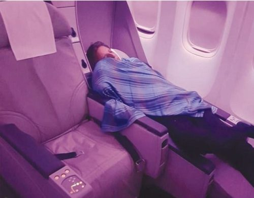

En pleno vuelo uno de los pasajeros hizo una foto al piloto durmiendo en primera clase, cuando normalmente tendría que estar en la cabina. El avión con 300 pasajeros salió de Pakistán con dirección a Londres. El pasajero se quejó a una de las azafatas, seguidamente hizo la foto y la subió a Internet. El piloto comercial Amir Akhtar Hashmi ha sido despedido después de que se descubriese que había dormido una siesta durante todo un vuelo en el que él era el comandante. Amir había dejado a su aprendiz al mando de los controles de una aeronave que transportaba a más de 300 pasajeros.
Fue el pasado mes de mayo, en un vuelo que cubría la ruta entre el aeropuerto de Porlamar, en Isla Margarita y el aeródromo de Los Roques, en Venezuela. El vuelo dura apenas unos 60 minutos y debido a las reducidas dimensiones de la pista de aterrizaje de Los Roques, se hace en aviones pequeños. La tripulación del aparato la componían el capitán y un copiloto. El capitán, ya mayor, fue el encargado de despegar el avión, cosa que debió dejarlo exhausto, porque poco después cayó rendido. Se durmió, y sólo los correajes de seguridad impedían que se empotrara contra los cuadros de mando. Lejos de sorprenderse, el copiloto se mostraba tranquilo, disfrutando del paisaje y del piloto automático.
Poco antes de aterrizar, en una pista que apenas tiene un metro de tierra entre el asfalto y el mar, el piloto se desperezó, se estiró y posó el avión, dando la bienvenida a la isla a los sorprendidos pasajeros. Pero el caso del piloto durmiente no acabó ahí. La excursión de nuestro lector duró todo el día, tiempo en el que el piloto y el avión permanecieron en la pequeña isla de coral del Caribe venezolano. No podemos dar cuenta de las actividades del capitán en la isla, pero lo que es seguro es que no pudo descansar mucho, porque en el viaje de vuelta... volvió a quedarse dormido. Ya se sabe, en el Caribe las cosas se toman con calma.
En pleno vuelo uno de los pasajeros hizo una foto al piloto durmiendo en primera clase, cuando normalmente tendría que estar en la cabina. El avión con 300 pasajeros salió de Pakistán con dirección a Londres. El pasajero se quejó a una de las azafatas, seguidamente hizo la foto y la subió a Internet. El piloto comercial Amir Akhtar Hashmi ha sido despedido después de que se descubriese que había dormido una siesta durante todo un vuelo en el que él era el comandante. Amir había dejado a su aprendiz al mando de los controles de una aeronave que transportaba a más de 300 pasajeros.
El resultado de la comparación es muy revelador. Estados Unidos, China, Alemania, Japón, Francia y Reino Unido son las entidades económicas más grandes del mundo, seguidas por Italia, Brasil y Canadá. Lo interesante llega justo después. En el grupo de cabeza se cuela décima Walmart, la mayor cadena comercial del mundo y la primera corporación por ingresos del Fortune Global 500.